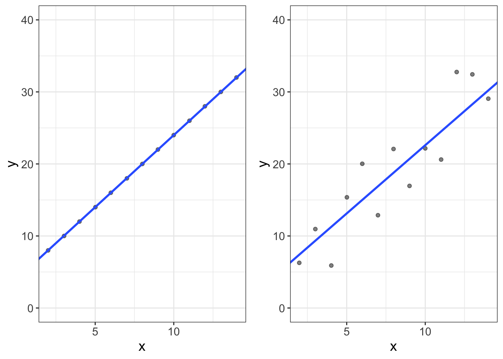

Measurement
When I was a lad (7th grade, that is), I took algebra. My teacher was trying to sell math as an important life skill.
Alas, I was lizdexic dyslexic, so Math wasn’t my favorite subject. But, for some reason, I’ve always had a fascination with Albert Einstein. So, when Ms. Miller said his name, I lifted my head from between my folded arms.
“Einstein was a mathemetician, you know…” she said.
I scoffed. “No, Einstein was a scientist.”
“Scientists use math.”
That truly puzzled me. Scientists use math??? But…they’re scientists?
I really couldn’t figure out why in the world a scientist would ever use math. To me, a scientist was someone in a lab coat who boiled acids in petri dishes or launched rockets into space.
Why in the world would a scientist use math?
In retrospect, the answer was obvious: scientists measure things, like the temperature of a liquid or the speed of a rocket.
Okay…so they measure things. Aaaaand?????
Think about what it means to measure something: we take an abstract concept (like how fast something is traveling) and convert it to a number (like kilometers per hour).
And, once you have converted something in the world (e.g., speed, temperature, depression, age) into a number….
You can use math.
So, scientists study how things work. To study how things work, they have to measure how these things behave. Measuring converts “things” to numbers. Once they’re represented as numbers, we can use math.
Ironically, it wasn’t until college I saw that connection.
Technically, most people don’t really use math in science. They use statistics.
And what’s the difference between statistics and math?
Statistics = Math + Error.
That’s it! Just look at the two plots below. The first plot is a cartesian plot of \(X\) and \(Y\). We have a bunch of numbers for \(X\) and \(Y\) and a line. The second plot looks similar to the first, but the dots don’t all fall on the line. Or, in other words, the line is the math part. Because not all dots fall on the line, we have “error” in predicting these \(Y\) values. So, Statistics = Math + Error.

Why am I talking about measurement?
I’m glad you asked. Or, I’m glad I asked. This whole chapter, I’ve been mad at myself. I hate when information is presented without context. “Here’s a bunch of stuff people need to know about statistics! But don’t ask me why!”
Alas, this chapter is largely theoretical, without much practical information.
So why am I telling you this?
Two reasons. First, I can’t yet be practical (and show you how to compute important statistics related to measurement) without you knowing what a correlation is, how to compute it, and how to visualize it. I could, of course, put the measurement chapter after I teach you all that stuff, but that would be weird; we need to measure variables before we can compute them. So, this chapter has to be theoretical.
Second, I put measurement front-and-center to emphasize that, without good measures, there’s no point in doing statistics.
So, just because I’m not giving you the “how,” that doesn’t mean this chapter isn’t important. (In fact, aside from Ethics, this is probably the most important chapter).
Constructs
So, scientists study things. (I know, that’s outrageously specific). We study things like rocks (geologists), bodies (biology), chemicals (chemistry), motion (physics), etc. Sometimes, the things we study can be observed. We can see rocks. We can see bodies (or even the insides of bodies).
Other times, we can’t see these things. We can’t see gravity. But we can see gravity’s influence on other things.
For us psychologists, we drew the short end of the stick. Most of what we study can’t be observed. We can’t see depression, or stress, or attention, or schizophrenia. Like gravity or atoms, we can only infer its influence on other things. For example, you can’t see anger, but you can observe its influence when your mom hurls pancakes, fresh of the skillet, on your older brother’s face. (True story, btw. My older brother was screaming for pancakes and my mom got fed up…I’m only a little satisfied every time I think of that story. Sorry Jordan.).
These “things” we study, that cannot be observed, but only inferred by their influence on other things, are called construct. Stress is a construct. Anger is a construct. Sex drive is a construct.
Before we science the sh%& out of constructs, we have to convert them to numbers. To do that, we have to use “operational definitions.”
Operational Definitions
So, we have a construct, or a thing that we want to study that cannot be directly observed. Remember, though we can’t observe them, we know they exist because of the things we can observe.
An operational definition is how we make that conversion from unobserved to observed.
We should probably make an official definition, huh? Okay….
Operational definitions are the objective criteria we use to quantify our constructs.
Let’s do an example. Let’s say I want to measure anger. How do you know anger exists? You see manifestations of it. One manifestation is punching people in the face.
So, perhaps, you decide to “operationalize” anger by counting the number of times a participant punched someone in the face during the duration of an experiment. That would work as an operational definition! (It’s a bad definition, btw, but it’s technically an operational definition. We’ll get into good versus bad in the next few sections).
What makes this operational definition work is that it fits three criteria:
Our operational definition is observable. A punch to someone’s face can be observed. Magnetic chalkra fields cannot. So, check.
Our operational definition is objective. In other words, if two people were to observe the behavior of interest (a participant punching someone in the face), we expect the two would agree on the value. It would be quite rare for two to disagree. (“I don’t know, it looked more like a yawn to me.”) So, a punch to the face is objective. One’s subjective evaluation of someone’s body language is not. (There are ways we can make subjective opinions more objective, but I’m not going to get into that).
The measure is specific. Notice we qualified our criteria by saying it had to be a punch (not hit, caress, brush) in the face (not shoulder, stomach, kidney, etc.), during a particular duration. When operational definitions are specific, they’re more likely to be objective. For example, if we said our OD of anger was the number of times someone expressed anger, that’s not very specific! What counts as an expression of anger? Furrowed eyebrows? Heavy breathing? Punching holes in drywall?
But, of course, our OD might meet all the criteria, but really suck. Maybe our OD of anger is number of times the participant’s eyebrows lower more than 2mm from their resting face within the first 60 minute after the experimenter states a pre-determined sequence of “your mom” insults. That there is specific! But it’s a bad definition for anger. Maybe they lowered their eyebrows because they were confused, or concentrating as they tried to figure out why they were being insulted, or maybe they have a resting butch face.
So, a good OD doesn’t necessarily mean we’re actually measuring what we want to measure. To determine that, we need to understand what validity is.
Validity
Validity means “truth.” If one makes an invalid argument, that means they’re speaking falsehoods.
When speaking of measurement, validity means we have actually measured what we think we measured.
A valid measurement of anger measures anger. No more, no less.
A valid measurement of gravity measures gravity. No more, no less.
A valid measure of blood pressure measures blood pressure. No more, no less.
Let’s consider some invalid measures. Maybe let’s use a table, eh?
| Construct | Operational Definition | What’s wrong with it? |
|---|---|---|
| The flu | # of times someone sneezes in an hour | People who sneeze might have allergies, and sometimes sneezing isn’t a symptom of the flu |
| Intelligence among monkeys | Their score on a written intelligence test | Monkeys can’t read. Need I say more? |
| A house’s hauntedness | Electromagnetic Field (EMF) machine | Why would ghosts give off electrical signals? Also, other things give off electrical signals (like, you know, power lines) |
So, you feeling good about what validity is?
The next question, of course, is how in the world you determine whether your measure is valid.
Actually, that’s a bad question. Measures don’t divide nicely into valid and invalid measures. Instead, our measures have varying degrees of validity. But, again, how do you determine the degree to which your measures are valid?
Evaluating Validity
It turns out, evaluating validity isn’t easy (at least in psychology). And, it’s subjective. (But remember from the ethics chapter that subjectivity isn’t necessarily a bad thing). To evaluate validity, we eventually make a subjective judgment call where we weigh the evidence.
What sorts of evidence are we looking for? Usually, we consider three forms of evidence:
Content validity. This one is the hardest to grasp, methinks. Essentially this says our operational definitions measure all aspects of the construct, and do not measure things they should not. For example, depression is generally considered to be comprised of sadness, hopelessness, and a lack of motivation. If our measure only measures sadness (and not hopelessness and motivation), we have failed in content validity. Likewise, if our measure of depression measures how many times people frown, you might accidentally be measuring concentration!
The best way to evaluate content validity is to have experts in the area evaluate your measure. If you get a bunch of depression experts to assess your measure, and they all agree you seem to have hit all the important aspects of depression (and no more), you probably have good content validity.
Face validity. Face validity refers to the degree to which our operational definitions appear to measure what we’re trying to measure. If we’re measuring blood pressure, but our operational definition uses a breathalyzer, that’s pretty poor face validity! Likewise, if we’re measuring stress and we ask people how frequently they yodel, again we have poor face validity.
Generally we want high face validity. However, in psychology we tend to use a lot of self-report stuff. In these situations, face validity might be bad. Why? Well, let me illustrate with a story. Starting in high school, I began to suspect I was dyslexic. When I entered college, I struggled with completing my tests on time. I knew if I had a dyslexia diagnosis, I’d get more time! So, when they began asking me questions, I was highly motivated to perform poorly. It was an honest struggle not to miss questions on purpose so I could get that diagnosis. If I had more questionable ethics, I might have scored poorly, but not because I had a learning disability, but because I was motivated to look like I had a learning disability. When measures have high face validity, they’re easier to fake.
But, I think generally people agree it’s worth the cost. It’s very hard (and quite rare) to have self-report questions with low face validity and high content validity.
Criterion validity. This is kinda sorta a tangential way to gather evidence of validity. Let’s say we want to develop a measure of nerdiness. Also suppose there’s some theory out there that suggests nerds are more successful in their careers. We have two constructs (nerdiness and success in careers). If that is indeed the case, then our measure of nerdiness should be correlated with measures of success.
This may be the easiest way to gather evidence of validity. There’s mountains of statistics we could use that compute associations between two measures.
Alas, my discussion of validity is painfully brief. There are many of my type (i.e., quantitative psychologists) who believe validity is the most important part of statistics. I don’t think I disagree. You can have amazing visuals, robust statistics, and beautiful statistical models that say amazing things about the world. But if your instruments don’t actually measure what you think they’re measuring, you’re screwed!
Despite it’s importance, this book isn’t about measurement. It’s about statistics. And, I’m a poor teacher of measurement issues. So, I will end this section with an embarassing admission: validity is more important than I have time to cover, but I won’t cover it and just pretend we have valid measures for the remainder of the book.
Yikes. I can practically hear my colleagues throwing this textbook into a crackling fire and dismissing me as a fraud. (If you are using a digital text, that’s a very expensive act of frustration).
Reliability
So, yeah, it’s kinda hard to do validity. Reliability, on the other hand, is easy! (Or easier).
What is reliability, you ask?
Reliability refers to the consistency of a measure.
Here’s the basic idea. Let’s say you’re measuring the age of a mummy using carbon dating. To do so, you take samples from 10 different sections of the same skeleton. Maybe your first sample says the mummy is 2,000 years old. And maybe the second says the mummy is 10,000 years old. Then the third says it’s ten minutes old. Then the next says it was actually born in the future, but has returned via a wormhole in your mother’s garbage disposal.
In other words, our measure is inconsistent, or it varies from one occasion to the next.
That sucks.
Why does it suck? Because we can never be sure if the numbers we use are even close to their “true” value. When this happens, our statistical models have a real hard time picking out any patterns.
Evaluating reliability
Luckily for us, measuring reliability is much easier than measuring validity. (There will be nuances I’m going to ignore because, again, this is a book about statistics, not measurement.) All it requires of us is that we have at least two different measures of the same people. Why two? Well, you can’t very well measure consistency with only one score! How consistent is an athlete who only plays a single game? You don’t know! You can’t know until you measure them more than once.
Generally, we have three ways of measuring reliability. Each of these ways gives us two measures of the same person (or thing, if you’re not measuring people). The first (test-retest) gives us 2+ scores by measuring people 2+ times. The second (internal consistency) only mesures once, but divides each person’s answers into 2+ splits. The third (interrater) utilizes two different raters of an event (e.g., how many times a child throws a tantrum).
Test-retest reliability. We can assess the consistency of a measure by measuring the same people (or things, if you study things.) multiple times. So maybe I measure your depression today, then measure you again in a few weeks. I can then correlate your scores. (We’ll talk more about how to do this later. I’ll even show you examples!). Now, I have an objective measure of the reliability of the test. Easy peasy! (Kinda…it’s actually a bit tedious to measure people more than once. If you’re measuring rocks or lethal bacteria, consider yourself lucky!…unless, of course, you get attacked by said lethal bacteria. Or rocks. In which case, my apologies for being insensitive).
Internal consistency reliability. It’s tedious to measure the same person more than once. So, internal consistency is the lazy little brother of test-retest reliability. Let’s say we have a questionnaire measuring motivation, and let’s say that questionnaire has 10 questions. The basic idea behind internal consistency, is we split the test in half (maybe first five versus second five). Then we compute the sums for each half and, now that we have a pair of scores for each person, we can correlate their two scores. (Again, we’ll talk more about what it means to “correlate” two things later). In reality, there’s some fancy-pantsy statistics that allow us to (metaphorically) split the test more than once, but the idea is the same.
Interrater reliability. The first two measures work quite well if you’re using self-report measures. Not so well when we measure using raters. Let’s say we have five people watching my measurement YouTube video. We can ask each of them to rate the amazingness of my video (say, on a scale of 1-10). Once again, we now have multiple measurements of the same person, which means we can assess consistency. And, once again, we can easily compute some statistics that measure how consistent our raters are.
As with validity, there’s no (good) criteria for “reliable” versus “unreliable.” There are some folks out there who try to establish “benchmarks” for what good reliability numbers are, but I favor a subjective judgment that weighs the various sources of evidence.
Increasing Reliability
So, let’s say you develop your measure of the construct of interest and you’re super excited to make world-changing discoveries.
Theeeen you compute reliability. And it sucks.
Oops.
What now?
Fortunately, it’s pretty easy to increase a measure’s reliability. All you do is make the measure longer. Maybe your measure of depression is 10 items. Make it 20. Maybe you measure the age of a fossil with 5 samples. Make it 10. Maybe you measure acceleration by dropping 10 bowling balls off of a skyscraper. Drop 20.
Why does that work?
Let me put it this way. Say you’re going on a date with a fella for the first time. You, obviously, want to know if this guy is a creep. After one date, perhaps you start to think this guy’s quite swell; he makes you laugh, he’s complimentary, and he smells like daisies. But, you can’t assess his reliability yet. Is he always this way? Or is he putting on a good show.
Now, on the second date, he’s not as funny, doesn’t compliment you nearly as much, and he smells like Old Spice instead of daisies. Lame. So, maybe he’s no Prince Charmain, but worth a third date.
And a fourth.
And a fifth.
Now, 50 years and thousands of dates later, that dude’s your husband. After so many dates, you have a pretty good idea of whether this person’s swell. Why? Because you have “measured” that person for decades.
It’s the same with our measures of constructs. Say you compute someone’s depression score using a measure with only five items. You’d be far less confident in their score than if you had 1,000 items. (Although having people complete 1,000 items is cruel. And it might induce depression.) If you measure the age of a fossil 50 times (and average the age estimate), you can be pretty confident that average score is much more reliable than if you only measured 5 times.
In short, when we have lots of items (or lots of measurements), we can become increasingly certain about our scores.
Variable types
Predictor versus Outcome Variables
One critical skill you need to develop is the ability to distinguish predictor versus outcome variables. Why? Because eventually, we will have to explicitly tell our statistics software which variable (or variables) is the predictor, and which is the outcome.
The outcome variable is the variable that is influenced by the predictor variable. The predictor variable is the variable that is either (1) manipulated directly by the experimenter (when this happens, we often call it an “independent variable”), or (2) posited by the researcher to have an influence on the dependent variable.
Another way to think of it is the outcome variable is the effect while the predictor variable is the cause. (Some statisticians are quite ready to pounce on that statement. “Correlation is not causation!” they’ll say. Just chill, ya’ll, then read the note below). Or, the predictor comes before the outcome.
When trying to decide which is which, consider these questions:
- Are you trying to predict a future value? If so, that variable you’re trying to predict is the outcome. The variable(s) you use to make that predictor are the predictors.
- Are you trying to see what happens to a variable after you introduce a change in the environment? The change in the environment is the predictor, the “what happens” is the outcome.
- Does one variable come before the other? If so, the variable that comes first is the predictor and the varaible that comes after is the outcome.
So, let’s look at some examples. Let’s consider a few scenarios to guide us through our predictor versus outcome decision:
- The association between how much you eat in the morning and your energy that day. The third question will help with this one. Eating breakfast in the morning comes before energy expenditure throughout the day. So, breakfast amount is the predictor and energy is the outcome.
Let’s do another:
- Mean difference in depression for treatment versus control groups. The second question helps. We have introduced a change in the environment (assigning to treatment versus control group). That makes group (treatment versus control) the predictor (or independent variable in this case), and depression the outcome.
And another:
- The association between stress and academic achievement. This is more tricky. It’s tricky because either variable can fill either role. And it really depends on your research question and intuition. Some people might be trying to understand how academic achievement might cause changes in stress. If this is the case, stress is the outcome. Others might want to see how one’s stress affects (or causes changes in) academic achievement. In this case, stress is the predictor and academic achievemen is the outcome.
If it helps, ask yourself, “what do I think is causing what?” The cause is the predictor, the effect is the outcome. Just don’t say that in front of a statistician, or they might throw a book at you. Or a calculator. (Statisticians are known to carry calculators).
Why are statisticians cranky about cause and effect?
That’s a good question. For decades, intro stats books have taught that correlation does not imply causation. For example, there’s a correlation between ice cream consumption and heat strokes. Does that mean eating ice cream causes heat strokes? Of course not. Rather, heat causes both an increase in ice cream consumption and number of heat strokes. This statement (correlation does not imply causation) is a good reminder that an observed relationship doesn’t necessarily mean we have evidence of causation.
However, our job as scientists is to find causation! That’s what science is about! The way I see it, we often begin looking for causation by finding correlation. Once we’ve found correlation, we then start using more advanced statistical or methodological designs to build evidence in favor of a causal link.
Let me address one more caveat before moving on. I see a lot of students confuse variables with levels. Let’s say we have a treatment group and a control group. Some students think their predictor variable is the treatment group and the outcome variable is the control group. That is not the case! The predictor variable is actually group (treatment versus control) and the outcome is something else (maybe depression, or stress, or flu symptoms).
Treatment and control are levels within the predictor variable. Don’t mix the two up!
Measurement scales
We’re at the home stretch. Maybe it’s time for a joke.
What’s the best thing about Switzerland?
I don’t know, but the flag is a big plus.
Every statistics book makes a big deal about “measurement types.” I’m starting to feel peer-pressure, so I’m going to talk about them too.
There are four types of measurement “scales.” In other words, when we measure a construct, our operational definitions we take will take one of four forms. These forms are:
- Nominal. Nominal, or “named” variables are categories, like gender (male and female), or political ideology (republican and democrat), or book genre (science fiction versus fantasy versus romance versus contemporary). When we measure a construct using a nominal scales, that means we simply assign things different labels. One important thing about nominal variables is there is no inherent ordering of them. Males are no more gender-y than females. Republicans are no more political idology-y than democrats. Science fiction books are no more book genre-y than romance.
- Ordinal. When we measure a construct using an ordinal scale, we also use labels, but the labels have a specific order. Suppose we are speed-dating and we rank-order the dates in terms of attractiveness (e.g., 1st, 2nd, 3rd). Now, we can say 1st is more attractive than 2nd, 3rd, etc. We cannot, however, order their hair color (e.g., red hair is more hairy than blonde). What we cannot say is how much more attractive 1st is than 2nd, 3rd, etc. Also, it wouldn’t make sense to compute a mean of rankings (e.g., the average ranking of these fine specimens was 5.5). Averaging ranks is kinda meaningless. If we want to compute means (or many other statistics), we need interval scales.
- Interval. Like ordinal scales, interval scales have a specific order, but the distance between points in the scale are equal. With our attractiveness rankings (1st versus 2nd), our ordinal scale didn’t tell us how much more attractive 1st was than 2nd. Interval scales have equal separation between numbers. I know, that’s all very abstract. Temperature (e.g., in Farenheit) is an interval scale. That means the difference between 60 and 70 degrees is exactly the same as the difference between 10 and 20 degrees. Why is that important? Because, when we use statistics on data, we make the assumption the spaces between numbers is meaningful. When we make that assumption, we can compute statistics. We cannot compute statistics on ordinal variables (kinda….more on that in a minute).
- Ratio. Ratio scales are like interval scales. The only difference is that ratio scales have a “true zero” point. That means a value of zero actually means an absence of that variable. If I have 0 children, I truly have zero children. If I have a Farenheit temperature of zero, I do not have no temperature.
Golly, that was hard to do. I hate technicality for the sake of technicality. I never understood why we made a big deal about these measurement types. Let’s go ahead and simplify things. We really only care about two measurement types:
- Categorical variables.
- Numeric variables.
Categorical variables comprise nominal and ordinal variables, while numeric variables comprise interval and ratio variables.
Why is this distinction necessary? Because, when we’re doing statistics, we cannot use many statistics on categorical variables. You cannot compute the mean of gender. (You can compute the mode, or most frequently occuring score). The mean serves as the foundation of all of statistics, so that means we cannot do the majority of statistics with categorical variables.
“Wait a minute! Did he just say we cannot use statistics when we have categorical variables????? Well, I’m screwed, because I really wanted to study gender!”
No worries, young researcher. You can still use statistics for categorical variables. However, the categorical variables must be predictor variables, not outcome variables, at least in this class. So, you can use gender to predict IQ (no contest…girls are smarter). You can use gender to predict height (sorry ladies, girls are shorter). You can use gender to predict empathy.
There are statistical methods out there that can predict categorical variables, but those methods (called generalized linear models) are beyond the scope of this book. Sorry!
Also, the type of variable (categorical versus numeric) determines the type of plots we use. They also determine the statistics we can compute. If you have a categorical predictor (e.g., treatment versus control conditions), you can compute mean differences between groups, but you cannot compute a correlation coefficient. (Actually, you kinda can….but I’m not going to get into that in this book. Check out wikipedia if you’re interestedf). If you have a numeric predictor and a numeric outcome, you might compute a slope and an intercept (which you wouldn’t compute for categorical variables….again, kinda).
I know, I’m being evasive and oddly hedged. There’s a reason for that. I’ll eventually show you the numeric versus categorical distinction isn’t all that important, but it’s helpful to think of that distinction as important, at least at the beginning of the book. Eventually, I’ll start bending those rules to show you when it’s helpful to consider categorical variables as numeric variables.
Take-home message
Science is interested in studying constructs, or things we cannot see but want to know about (like depression, gravity, or rock age). More specifically, we’re interested in studying relationships between constructs. Some constructs are independent variables (the causes) and some are dependent variables (the effects). To make these constructs study-able, we have to convert the unobservable constructs into something we can measure. We do so by using operational definitions, which are the criteria we use that assign numbers to constructs. Operational definitions are specific, objective, and observable. Once we’ve created operational definitions of our constructs, we should probably assess their validity (i.e., the degree to which these operational definitions actually measure the construct we want them to measure), and their reliability (i.e., how consistently they measure what they’re measuring).
Our operational definitions (or measures) of our constructs will fall into one of four types: nominal (named labels only), ordinal (ordered labels), interval (numbered variables with no true zero), and ratio (numbered variables with a true zero). However, we really only care about which variables are categorical (nominal/ordinal) and which are numeric (interval/ratio). We care about this because, at least for this textbook, our outcome variables must be numeric and our predictor variables can be numeric or categorical.
Now, go eat a breakfast pizza. You’ve earned it!